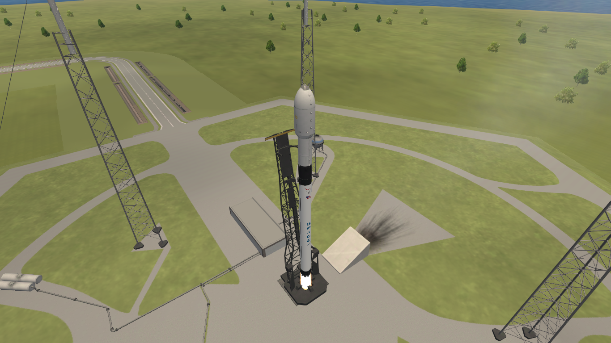
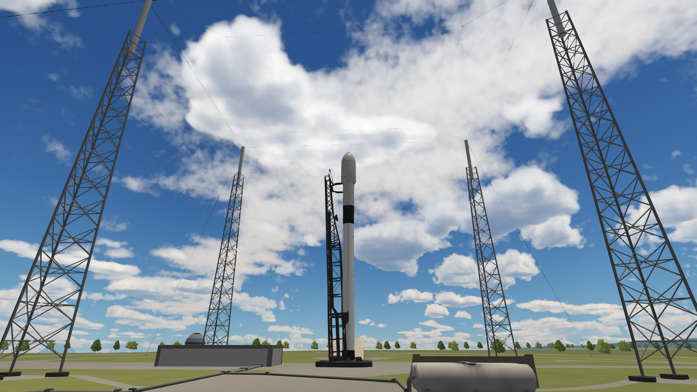
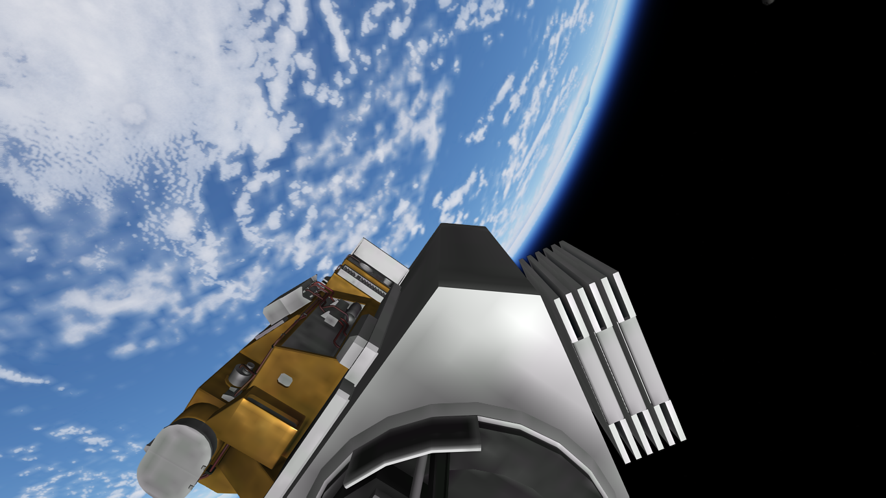

Artemis Echo
Vehículo: Falcon 9 Block 5
Fecha: 19 de septiembre de 2025
Estado: Éxito

Detalles Técnicos
- Vehículo: Falcon 9 Block 5
- Altura del cohete: 70 m
- Propulsor: B1054
- Carga útil: Satélite Artemis Echo
- Órbita: 600 km y 97.8°
- Recuperación: Desechable
Introducción
Halcon Space realizó con éxito el lanzamiento de la misión Artemis Echo, cuyo objetivo fue colocar el satélite del mismo nombre en una órbita heliosincrónica (SSO) de 600 km de altitud con una inclinación de 97.8°, en colaboración con el cliente Lunar Vision.
El satélite Artemis Echo fue diseñado para observación climática y monitoreo ambiental. Esta misión forma parte de un esfuerzo estratégico por parte de Lunar Vision para recopilar datos que optimicen la gestión de recursos naturales.
Imágenes Destacadas


